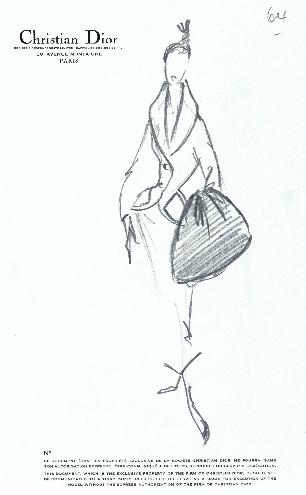
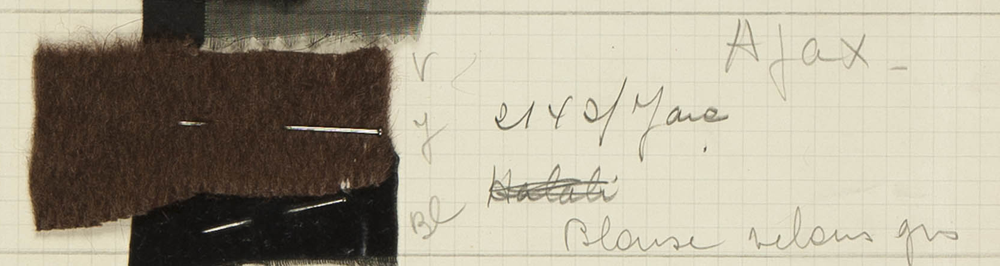
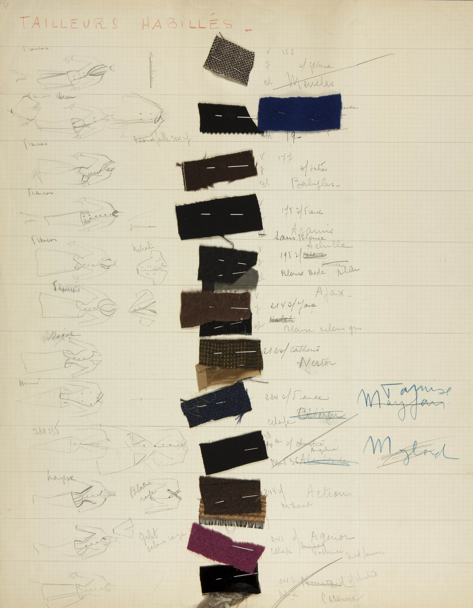
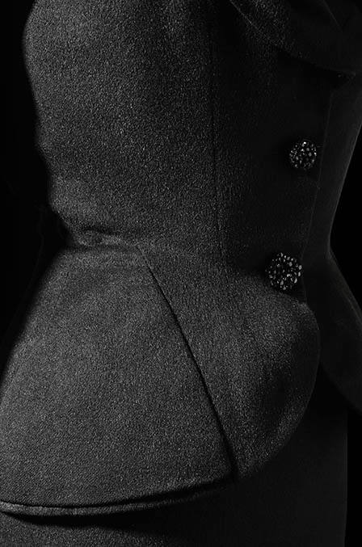
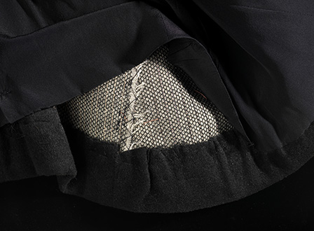
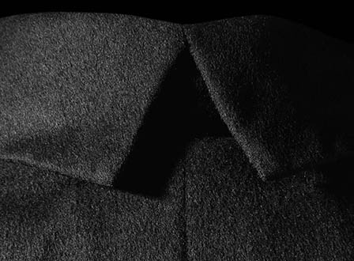
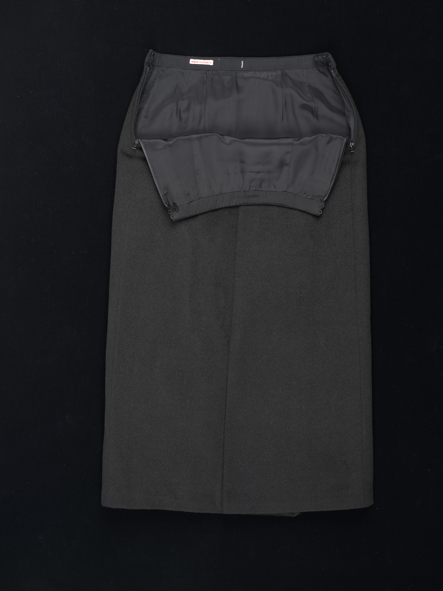
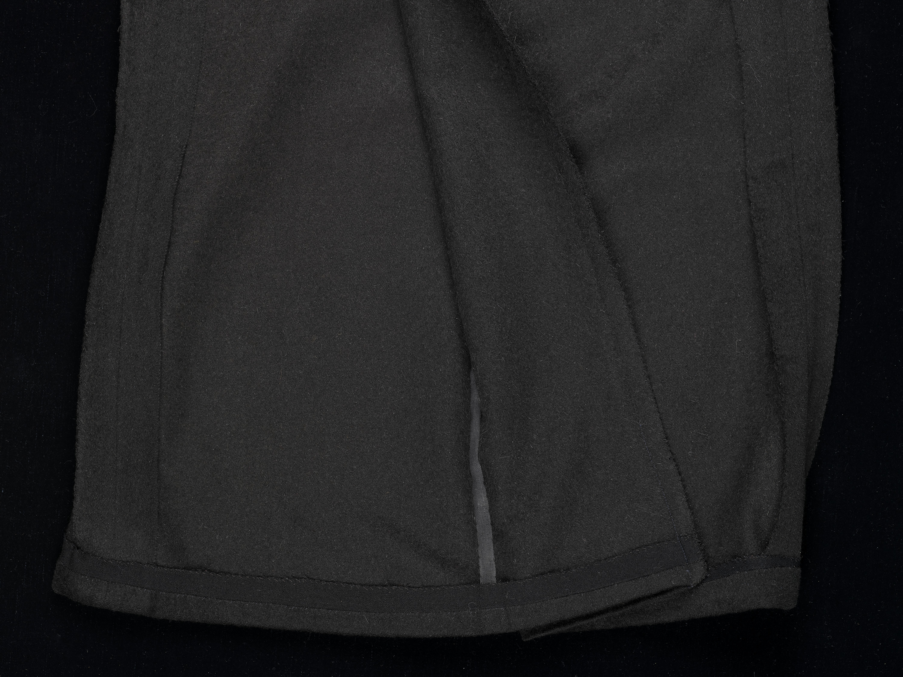

Croquis de presse
Croquis de presse du modèle Ajax, qui doit son nom au héros de la mythologie grecque et de la guerre de Troie, sous-entendant que la femme qui le porte est prête à toute éventualité.
Collection Dior Héritage, Paris



Page d’échantillons
Chaque modèle a sa page qui décrit la tenue, l’atelier et la cliente. Le travail est donc également réparti entre les ateliers, et les mannequins ont le temps de se changer entre les présentations.
Collection Dior Héritage, Paris


L’Art et la mode, 1952
Photo : Georges Saad

*
Ci-dessus : Poche et pince en biais pour bien marquer la taille fine et rembourrage pour souligner les hanches.
* Photos Laziz Hamani
*
*
À gauche : Boutons en marcassite (fabricant inconnu)
Ci-dessous : Entoilage et tulle de coton servant à raidir le tissu sur les hanches.


*
Dos de la jupe avec pli d’aisance.




- Envers de la jupe
- Ruban pour le pli afin qu’il tombe juste
- Larges réserves de couture